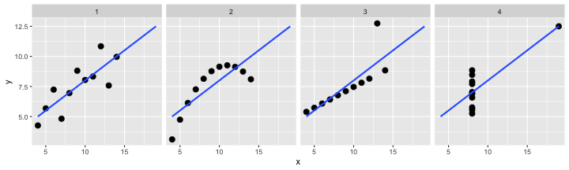

Rにやらせて楽しよう — データの可視化と下ごしらえ
(SOKENDAI, The Graduate University for Advanced Studies)
使える形にデータを整える
Happy families are all alike;
every unhappy family is unhappy in its own way
— Leo Tolstoy “Anna Karenina”tidy datasets are all alike,
but every messy dataset is messy in its own way
— Hadley Wickham
- 出発点となるデータはさまざま
- 実験ノート、フィールドノート、
- データベース、シミュレーション。。。
- 解析や作図に使えるデータ形式はほぼ決まってる
ggplot(data, ...),glm(..., data, ...), …
整然データ tidy data
- 1行は1つの観測
- 1列は1つの変数
- 1セルは1つの値
- (ggplotしたくなる形)
print(mtcars) mpg cyl disp hp drat wt qsec vs am gear carb
<num> <num> <num> <num> <num> <num> <num> <num> <num> <num> <num>
1: 21.0 6 160 110 3.90 2.620 16.46 0 1 4 4
2: 21.0 6 160 110 3.90 2.875 17.02 0 1 4 4
3: 22.8 4 108 93 3.85 2.320 18.61 1 1 4 1
4: 21.4 6 258 110 3.08 3.215 19.44 1 0 3 1
---
29: 15.8 8 351 264 4.22 3.170 14.50 0 1 5 4
30: 19.7 6 145 175 3.62 2.770 15.50 0 1 5 6
31: 15.0 8 301 335 3.54 3.570 14.60 0 1 5 8
32: 21.4 4 121 109 4.11 2.780 18.60 1 1 4 2
参考:
http://r4ds.had.co.nz/tidy-data.html
https://speakerdeck.com/fnshr/zheng-ran-detatutenani
雑然データ messy data
- 1つの観測を特定するには縦も横も見ないと
- 1つの変数が複数列にまたがっている
- 1つのセルに複数の意味や値が含まれている
- (データを採るときに楽な形。これは仕方ない)
VADeaths Rural Male Rural Female Urban Male Urban Female
50-54 11.7 8.7 15.4 8.4
55-59 18.1 11.7 24.3 13.6
60-64 26.9 20.3 37.0 19.3
65-69 41.0 30.9 54.6 35.1
70-74 66.0 54.3 71.1 50.0
↓下ごしらえ
lbound ubound region sex death_rate
1 50 54 Rural Male 11.7
2 55 59 Rural Male 18.1
3 60 64 Rural Male 26.9
4 65 69 Rural Male 41.0
5 70 74 Rural Male 66.0
6 50 54 Rural Female 8.7
7 55 59 Rural Female 11.7
8 60 64 Rural Female 20.3
9 65 69 Rural Female 30.9
10 70 74 Rural Female 54.3
11 50 54 Urban Male 15.4
12 55 59 Urban Male 24.3
13 60 64 Urban Male 37.0
14 65 69 Urban Male 54.6
15 70 74 Urban Male 71.1
16 50 54 Urban Female 8.4
17 55 59 Urban Female 13.6
18 60 64 Urban Female 19.3
19 65 69 Urban Female 35.1
20 70 74 Urban Female 50.0
tidyverseに便利な道具が揃ってる

Rでデータを上手に扱うためのパッケージ群
install.packages("tidyverse")
library(tidyverse)
# 関連パッケージが一挙に読み込まれる- 統一的な使い勝手
- シンプルな関数を繋げて使うデザイン

このパートではそれらのごく一部をご紹介 (~30分)
dplyr — data.frameの高速処理担当

ひとつの関数はひとつの仕事。
繋げて使いやすいシンプルな関数がたくさん。
- 抽出
filter(),select(),distinct(),sample_n()- 変更・追加
mutate(),rename()- 要約・集計
group_by(),summarise(),count()- ソート
arrange()- 結合
- 行方向:
bind_rows() - 列方向:
left_join(),inner_join(),full_join()
etc.
dplyr — data.frameの高速処理担当
いつもdata.frameが第一引数。
dplyr::filter(iris, Sepal.Length < 4.6) # 条件にあう行を抽出 Sepal.Length Sepal.Width Petal.Length Petal.Width Species
1 4.4 2.9 1.4 0.2 setosa
2 4.3 3.0 1.1 0.1 setosa
3 4.4 3.0 1.3 0.2 setosa
4 4.5 2.3 1.3 0.3 setosa
5 4.4 3.2 1.3 0.2 setosa
dplyr::sample_n(iris, 3L) # ランダムに3行抽出 Sepal.Length Sepal.Width Petal.Length Petal.Width Species
60 5.2 2.7 3.9 1.4 versicolor
14 4.3 3.0 1.1 0.1 setosa
107 4.9 2.5 4.5 1.7 virginica
dplyr — data.frameの高速処理担当
小さな関数を繋げて使う。
result = iris %>%
dplyr::arrange(Petal.Width) %>% # 小さい順に並べ替え
dplyr::filter(Species != "setosa") %>% # 行を除外
dplyr::select(-matches("^Petal")) %>% # 列を除外
dplyr::group_by(Species) %>% # グループごとに
dplyr::summarise_all(mean) %>% # 平均を計算
dplyr::mutate(area = Sepal.Length * Sepal.Width / 2) %>%
# 新しい列を作る
print() # 表示してみる Species Sepal.Length Sepal.Width area
<fctr> <num> <num> <num>
1: versicolor 5.936 2.770 8.221360
2: virginica 6.588 2.974 9.796356
見慣れないこの記号 %>% は何？
パイプ演算子 %>%
パイプの左側の変数を、右側の関数の第一引数にねじ込む:
1 %>% sum(2, 3)[1] 6
sum(1, 2, 3)[1] 6
下ごしらえの流れ作業に便利:
# data %>% process-A %>% process-B %>% process-C
1 %>% sum(2, 3) %>% factorial()[1] 720
パイプ演算子 %>% を使わない方法
一時変数を使う方法:
tmp1 = dplyr::filter(iris, Species != "setosa") # 行を除外
tmp2 = dplyr::select(tmp1, -matches("^Petal")) # 列を除外
tmp3 = dplyr::group_by(tmp2, Species) # グループごとに
result = dplyr::summarise_all(tmp3, mean) # 平均を計算もしくは全部同じ名前で:
result = dplyr::filter(iris, Species != "setosa") # 行を除外
result = dplyr::select(result, -matches("^Petal")) # 列を除外
result = dplyr::group_by(result, Species) # グループごとに
result = dplyr::summarise_all(result, mean) # 平均を計算どちらも悪くない。 何度も変数名を入力するのがやや冗長。
パイプ演算子 %>% を使わない方法
一時変数を使わない力技:
result = dplyr::summarise_all( # 平均を計算
dplyr::group_by( # グループごとに
dplyr::select( # 列を除外
dplyr::filter(iris, Species != "setosa"), # 行を除外
-matches("^Petal")), # 列を除外
Species), # グループごとに
mean) # 平均を計算改行さえしない超人技:
result = dplyr::summarise_all(dplyr::group_by(dplyr::select(dplyr::filter(iris, Species != "setosa"), -matches("^Petal")), Species), mean)論理の流れとプログラムの流れが合わず、目が行ったり来たり。
さっきのほうがぜんぜんマシ。
パイプ演算子 %>% を使う
慣れれば、論理の流れを追いやすい:
library(tidyverse)
result = iris %>%
dplyr::filter(Species != "setosa") %>% # 行を除外
dplyr::select(-matches("^Petal")) %>% # 列を除外
dplyr::group_by(Species) %>% # グループごとに
dplyr::summarise_all(mean) %>% # 平均を計算
print() # 表示してみる Species Sepal.Length Sepal.Width
<fctr> <num> <num>
1: versicolor 5.936 2.770
2: virginica 6.588 2.974
慣れるまではちょっと大変かも。無理して使わなくても大丈夫。
名前の衝突・上書きなどによる事故を防ぐ
filter(...) でも動くのにわざわざ頭に dplyr:: 付ける？
- 今回の発表では、どのパッケージ由来かをなるべく明示したかった
- ほかのパッケージや自分の作業によって、
同じ名前の関数で上書きされちゃっても大丈夫なように:
filter = function(x, y) return(NULL) # うっかり同名の関数を作る
filter(iris, Petal.Length < 1.2) # 新しいほうが使われちゃうNULL
dplyr::filter(iris, Petal.Length < 1.2) # 明示したので大丈夫 Sepal.Length Sepal.Width Petal.Length Petal.Width Species
1 4.3 3.0 1.1 0.1 setosa
2 4.6 3.6 1.0 0.2 setosa
tidyr — data.frameの変形・整形担当

- 横長から縦長に
gather()- 縦長から横長に
spread()- 入れ子構造をつくる、解消する
nest(),unnest()- 1列を複数の列に分離
separate()
etc.
tidyr::gather() 横長から縦長に
複数列にまたがる値を1列にする(ここではvalue)。
そのラベルも合わせて移動(ここではname)。
long_iris = iris %>% head(2L) %>% # 最初の2行だけ
rownames_to_column("id") %>% # ID列を追加
print() %>% # 途中経過を表示
tidyr::gather(name, value, -id, -Species) %>% # 縦長に変形
print() id Sepal.Length Sepal.Width Petal.Length Petal.Width Species
1 1 5.1 3.5 1.4 0.2 setosa
2 2 4.9 3.0 1.4 0.2 setosa
id Species name value
1 1 setosa Sepal.Length 5.1
2 2 setosa Sepal.Length 4.9
3 1 setosa Sepal.Width 3.5
4 2 setosa Sepal.Width 3.0
5 1 setosa Petal.Length 1.4
6 2 setosa Petal.Length 1.4
7 1 setosa Petal.Width 0.2
8 2 setosa Petal.Width 0.2
tidyr::spread() 縦長から横長に
1列に収まっていた値(value)を複数列の行列に変換。
そのラベル(name)を列の名前にする。
long_iris %>% print() %>% # gatherしたやつ
tidyr::spread(name, value) # 横長に戻す id Species name value
1 1 setosa Sepal.Length 5.1
2 2 setosa Sepal.Length 4.9
3 1 setosa Sepal.Width 3.5
4 2 setosa Sepal.Width 3.0
5 1 setosa Petal.Length 1.4
6 2 setosa Petal.Length 1.4
7 1 setosa Petal.Width 0.2
8 2 setosa Petal.Width 0.2
id Species Petal.Length Petal.Width Sepal.Length Sepal.Width
1 1 setosa 1.4 0.2 5.1 3.5
2 2 setosa 1.4 0.2 4.9 3.0
tidyr::separate() 列を分離
long_iris %>% print() %>% # gatherしたやつ
tidyr::separate(name, c("part", "measure")) # 列を分離 id Species name value
1 1 setosa Sepal.Length 5.1
2 2 setosa Sepal.Length 4.9
3 1 setosa Sepal.Width 3.5
4 2 setosa Sepal.Width 3.0
5 1 setosa Petal.Length 1.4
6 2 setosa Petal.Length 1.4
7 1 setosa Petal.Width 0.2
8 2 setosa Petal.Width 0.2
id Species part measure value
1 1 setosa Sepal Length 5.1
2 2 setosa Sepal Length 4.9
3 1 setosa Sepal Width 3.5
4 2 setosa Sepal Width 3.0
5 1 setosa Petal Length 1.4
6 2 setosa Petal Length 1.4
7 1 setosa Petal Width 0.2
8 2 setosa Petal Width 0.2
tidyr::nest() 入れ子にする
グループ毎にdata.frameを区切ってlist型の列に入れる。
nested_iris = iris %>%
as_tibble() %>%
tidyr::nest(-Species) %>% print() Species data
<fctr> <list>
1: setosa <tbl_df>
2: versicolor <tbl_df>
3: virginica <tbl_df>
nested_iris$data[[1L]]# A tibble: 50 x 4
Sepal.Length Sepal.Width Petal.Length Petal.Width
<dbl> <dbl> <dbl> <dbl>
1 5.1 3.5 1.4 0.2
2 4.9 3 1.4 0.2
3 4.7 3.2 1.3 0.2
4 4.6 3.1 1.5 0.2
5 5 3.6 1.4 0.2
6 5.4 3.9 1.7 0.4
7 4.6 3.4 1.4 0.3
8 5 3.4 1.5 0.2
# ... with 42 more rows
purrr

listやループの処理担当。
map(),walk()map_int(),map_dbl(),map_chr()map_dfr()pmap(),map2()flatten()- etc.
標準Rの lapply(), sapply(), vapply(), unlist() などの代わりに
purrr::map(): リストの各要素に関数を適用
v = c(1, 2, 3) # 長さ3のベクトル
v + 10 # それぞれに+10[1] 11 12 13
plus_ten = function(x) {x + 10} # +10する関数
purrr::map(v, plus_ten) # それぞれに適用[[1]]
[1] 11
[[2]]
[1] 12
[[3]]
[1] 13
この例ではあまり嬉しくないけど、使いどころは結構ある
ディレクトリ内の複数ファイルを一気に読む
nagoya2018/ # プロジェクトの最上階
├── data/ # データを置くディレクトリ
│ ├── cheetah.tsv # 同じ形のデータ
│ ├── giraffe.tsv
│ └── zebra.tsv
├─
# "data/cheetah.tsv", ...
files = fs::dir_ls("data", glob="*.tsv")
# それぞれ読んで、
purrr::map(files, readr::read_tsv) %>%
dplyr::bind_rows() # 1つのdata.frameに結合
# それぞれ読んで、1つのdata.frameに結合
purrr::map_dfr(files, readr::read_tsv)例題: anscombe
4組のx-yは、平均・分散・相関係数がほぼ同じ？
anscombe %>%
tibble::rownames_to_column("id") # あとで必要なID列
# xやyの値が何列にも広がってる。これを1列に(縦長に)したい# A tibble: 11 x 9
id x1 x2 x3 x4 y1 y2 y3 y4
<chr> <dbl> <dbl> <dbl> <dbl> <dbl> <dbl> <dbl> <dbl>
1 1 10 10 10 8 8.04 9.14 7.46 6.58
2 2 8 8 8 8 6.95 8.14 6.77 5.76
3 3 13 13 13 8 7.58 8.74 12.7 7.71
4 4 9 9 9 8 8.81 8.77 7.11 8.84
5 5 11 11 11 8 8.33 9.26 7.81 8.47
6 6 14 14 14 8 9.96 8.1 8.84 7.04
7 7 6 6 6 8 7.24 6.13 6.08 5.25
8 8 4 4 4 19 4.26 3.1 5.39 12.5
# ... with 3 more rows
例題: anscombe
4組のx-yは、平均・分散・相関係数がほぼ同じ？
anscombe %>%
tibble::rownames_to_column("id") %>% # あとで必要なID列
tidyr::gather(key, value, -id) # 縦長に変形
# key列の x1 とかを x, 1 の2列に分離したい# A tibble: 88 x 3
id key value
<chr> <chr> <dbl>
1 1 x1 10
2 2 x1 8
3 3 x1 13
4 4 x1 9
5 5 x1 11
6 6 x1 14
7 7 x1 6
8 8 x1 4
# ... with 80 more rows
例題: anscombe
4組のx-yは、平均・分散・相関係数がほぼ同じ？
anscombe %>%
tibble::rownames_to_column("id") %>% # あとで必要なID列
tidyr::gather(key, value, -id) %>% # 縦長に変形
tidyr::separate(key, c("axis", "group"), 1L) # 列を分離
# xとyのペアが1行になってほしい
# xとyが新たな列名になるように横長にしたい# A tibble: 88 x 4
id axis group value
<chr> <chr> <chr> <dbl>
1 1 x 1 10
2 2 x 1 8
3 3 x 1 13
4 4 x 1 9
5 5 x 1 11
6 6 x 1 14
7 7 x 1 6
8 8 x 1 4
# ... with 80 more rows
例題: anscombe
4組のx-yは、平均・分散・相関係数がほぼ同じ？
anscombe %>%
tibble::rownames_to_column("id") %>% # あとで必要なID列
tidyr::gather(key, value, -id) %>% # 縦長に変形
tidyr::separate(key, c("axis", "group"), 1L) %>% # 列を分離
tidyr::spread(axis, value) # axis列をx列とy列に# A tibble: 44 x 4
id group x y
<chr> <chr> <dbl> <dbl>
1 1 1 10 8.04
2 1 2 10 9.14
3 1 3 10 7.46
4 1 4 8 6.58
5 10 1 7 4.82
6 10 2 7 7.26
7 10 3 7 6.42
8 10 4 8 7.91
# ... with 36 more rows
例題: anscombe
4組のx-yは、平均・分散・相関係数がほぼ同じ？
tidy_anscombe = anscombe %>%
tibble::rownames_to_column("id") %>% # あとで必要なID列
tidyr::gather(key, value, -id) %>% # 縦長に変形
tidyr::separate(key, c("axis", "group"), 1L) %>% # 列を分離
tidyr::spread(axis, value) %>% # axis列をx列とy列に
dplyr::select(-id) %>% # 使い終わったID列を消す
dplyr::arrange(group) %>% # グループごとに並べる
print() # ggplotしたい形！ group x y
<char> <num> <num>
1: 1 10 8.04
2: 1 7 4.82
3: 1 5 5.68
4: 1 8 6.95
---
41: 4 8 7.04
42: 4 8 5.25
43: 4 19 12.50
44: 4 8 5.56
例題: anscombe
4組のx-yは、平均・分散・相関係数がほぼ同じ？
ggplot(tidy_anscombe, aes(x, y)) +
geom_point(size = 3) +
stat_smooth(method = lm, se = FALSE, fullrange = TRUE) +
facet_wrap(~ group, nrow = 1L)
例題: anscombe
dplyrのグループ化を使って要約
tidy_anscombe %>%
dplyr::group_by(group) %>% # group列でグループ化して
dplyr::summarise( # x, y列を使ってsummarize
mean_x = mean(x),
mean_y = mean(y),
sd_x = sd(x),
sd_y = sd(y),
cor_xy = cor(x, y)
)# A tibble: 4 x 6
group mean_x mean_y sd_x sd_y cor_xy
<chr> <dbl> <dbl> <dbl> <dbl> <dbl>
1 1 9 7.50 3.32 2.03 0.816
2 2 9 7.50 3.32 2.03 0.816
3 3 9 7.5 3.32 2.03 0.816
4 4 9 7.50 3.32 2.03 0.817
例題: anscombe
tidyrのネストを使って要約 (中級者向け)
tidy_anscombe %>%
tidyr::nest(-group) %>% # group列でネストして
dplyr::mutate(data = purrr::map(data, function(data_i) {
data_i %>% # 入れ子の内側の各データをいじって
summarise_all(funs(mean, sd)) %>%
dplyr::mutate(cor_xy = cor(data_i$x, data_i$y))
})) %>%
tidyr::unnest() # 入れ子を解消# A tibble: 4 x 6
group x_mean y_mean x_sd y_sd cor_xy
<chr> <dbl> <dbl> <dbl> <dbl> <dbl>
1 1 9 7.50 3.32 2.03 0.816
2 2 9 7.50 3.32 2.03 0.816
3 3 9 7.5 3.32 2.03 0.816
4 4 9 7.50 3.32 2.03 0.817
例題: VADeaths
as.data.frame(VADeaths) # data.frameに変換
# 行名を列に
# 縦長に変形
# 地域と性別を分離
# 下限と上限を分離 Rural Male Rural Female Urban Male Urban Female
50-54 11.7 8.7 15.4 8.4
55-59 18.1 11.7 24.3 13.6
60-64 26.9 20.3 37.0 19.3
65-69 41.0 30.9 54.6 35.1
70-74 66.0 54.3 71.1 50.0
例題: VADeaths
as.data.frame(VADeaths) %>% # data.frameに変換
tibble::rownames_to_column("class") # 行名を列に
# 縦長に変形
# 地域と性別を分離
# 下限と上限を分離 class Rural Male Rural Female Urban Male Urban Female
1 50-54 11.7 8.7 15.4 8.4
2 55-59 18.1 11.7 24.3 13.6
3 60-64 26.9 20.3 37.0 19.3
4 65-69 41.0 30.9 54.6 35.1
5 70-74 66.0 54.3 71.1 50.0
例題: VADeaths
as.data.frame(VADeaths) %>% # data.frameに変換
tibble::rownames_to_column("class") %>% # 行名を列に
tidyr::gather(people, death, -class) # 縦長に変形
# 地域と性別を分離
# 下限と上限を分離 class people death
1 50-54 Rural Male 11.7
2 55-59 Rural Male 18.1
3 60-64 Rural Male 26.9
4 65-69 Rural Male 41.0
5 70-74 Rural Male 66.0
6 50-54 Rural Female 8.7
7 55-59 Rural Female 11.7
8 60-64 Rural Female 20.3
9 65-69 Rural Female 30.9
10 70-74 Rural Female 54.3
11 50-54 Urban Male 15.4
12 55-59 Urban Male 24.3
13 60-64 Urban Male 37.0
14 65-69 Urban Male 54.6
15 70-74 Urban Male 71.1
16 50-54 Urban Female 8.4
17 55-59 Urban Female 13.6
18 60-64 Urban Female 19.3
19 65-69 Urban Female 35.1
20 70-74 Urban Female 50.0
例題: VADeaths
as.data.frame(VADeaths) %>% # data.frameに変換
tibble::rownames_to_column("class") %>% # 行名を列に
tidyr::gather(people, death, -class) %>% # 縦長に変形
tidyr::separate(people, c("region", "sex")) # 地域と性別を分離
# 下限と上限を分離 class region sex death
1 50-54 Rural Male 11.7
2 55-59 Rural Male 18.1
3 60-64 Rural Male 26.9
4 65-69 Rural Male 41.0
5 70-74 Rural Male 66.0
6 50-54 Rural Female 8.7
7 55-59 Rural Female 11.7
8 60-64 Rural Female 20.3
9 65-69 Rural Female 30.9
10 70-74 Rural Female 54.3
11 50-54 Urban Male 15.4
12 55-59 Urban Male 24.3
13 60-64 Urban Male 37.0
14 65-69 Urban Male 54.6
15 70-74 Urban Male 71.1
16 50-54 Urban Female 8.4
17 55-59 Urban Female 13.6
18 60-64 Urban Female 19.3
19 65-69 Urban Female 35.1
20 70-74 Urban Female 50.0
例題: VADeaths
as.data.frame(VADeaths) %>% # data.frameに変換
tibble::rownames_to_column("class") %>% # 行名を列に
tidyr::gather(people, death, -class) %>% # 縦長に変形
tidyr::separate(people, c("region", "sex")) %>% # 地域と性別を分離
tidyr::separate(class, c("lbound", "ubound"), "-", convert=TRUE)
# 下限と上限を分離 lbound ubound region sex death
1 50 54 Rural Male 11.7
2 55 59 Rural Male 18.1
3 60 64 Rural Male 26.9
4 65 69 Rural Male 41.0
5 70 74 Rural Male 66.0
6 50 54 Rural Female 8.7
7 55 59 Rural Female 11.7
8 60 64 Rural Female 20.3
9 65 69 Rural Female 30.9
10 70 74 Rural Female 54.3
11 50 54 Urban Male 15.4
12 55 59 Urban Male 24.3
13 60 64 Urban Male 37.0
14 65 69 Urban Male 54.6
15 70 74 Urban Male 71.1
16 50 54 Urban Female 8.4
17 55 59 Urban Female 13.6
18 60 64 Urban Female 19.3
19 65 69 Urban Female 35.1
20 70 74 Urban Female 50.0
例題: 数値+単位になっちゃってる列を処理
women2 = women %>% sample_n(2L) %>% dplyr::mutate(height = paste0(height, "in"), weight = paste(weight, "lbs")) %>% print() height weight
1 72in 164 lbs
2 67in 142 lbs
# 単位を捨てる (スペースの有無によらず可能)
women2 %>% dplyr::mutate(weight = readr::parse_number(weight)) height weight
1 72in 164
2 67in 142
# 単位を新しい列に分ける
women2 %>%
tidyr::separate(height, c("height", "uh"), -2L, convert=TRUE) %>%
tidyr::separate(weight, c("weight", "uw"), " ", convert=TRUE) height uh weight uw
1 72 in 164 lbs
2 67 in 142 lbs
おまけ: 文字列処理
全角英数字を半角に変換
c("ｔｐ５３", "ＫＲＡＳ") %>%
stringi::stri_trans_nfkc()[1] "tp53" "KRAS"
複雑な抽出・置換をしたい場合は stringrパッケージ で正規表現を使う:
c("Who am I? 24601!", "p = 0.02 *") %>%
str_extract("[\\d\\.]+") %>% # 連続する数字または小数点を抽出
as.numeric() # 数値に変換[1] 24601.00 0.02
正規表現は強力！
第3部まとめ — 整然データの下ごしらえ
- 解析や作図の前にデータを整える必要がある。
- 規則性のある形ならだいたいRでなんとかできる。
- 最初の生データは記録しやすい形でいいけど、
あとで機械的に変換することを念頭に。
- 最初の生データは記録しやすい形でいいけど、
- いまRを使うなら、tidyverseの機能を使うと捗る。
- それだけ分かってれば、具体的な方法を全部覚えなくても大丈夫。
参考
- R for Data Science — Hadley Wickham and Garrett Grolemund
- http://r4ds.had.co.nz/
- 英語版書籍
- 日本語版書籍(Rではじめるデータサイエンス)
- 各パッケージの公式ドキュメント
- tidyverse, dplyr, tidyr, purrr, tibble, readr, readxl, stringr
- 整然データとは何か — @f_nisihara
- https://speakerdeck.com/fnshr/zheng-ran-detatutenani
- http://id.fnshr.info/2017/01/09/tidy-data-intro/
おまけ: ソースコードをGitで管理
Rスクリプトに限らず、論文とかでも過去バージョンって捨てにくい。
Gitで管理すれば、いつでも履歴閲覧・巻き戻し可能 → 常に最新版のみ保持


本日のおさらい — Rにやらせて楽しよう
- データ読み込み、下ごしらえ、作図・解析。全工程の再現性が大切。
- プログラムは使いまわせる、再現できる、検証できる。
- きれいな図を簡単に描ける。
- データ、プログラム、結果を分離しよう。
- Rでやれるはず、って思えれば具体的なやり方は憶えなくても大丈夫。